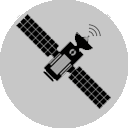
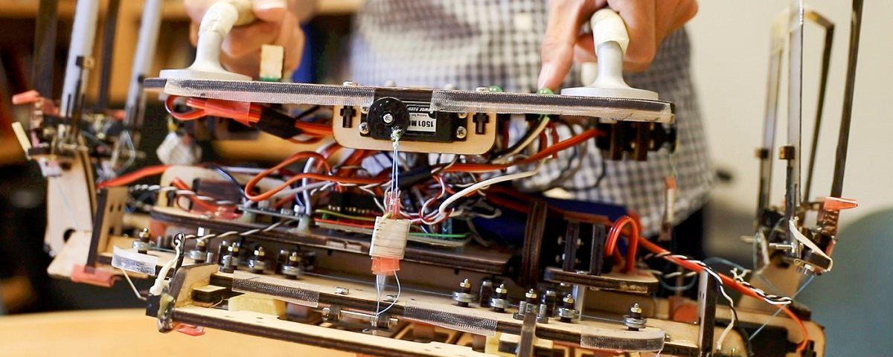

- 
Detritos fragmentados
9 000 mil objetos incluindo lixos,fragmentos e pedaços de naves, resultante de colisões com outros objetos.
-
Corpos de Foguete
800 mil é o número aproximado de corpos de fogutes que permanecem em órbita, sem qualquer utilidade, depois de terem seu combustível gasto.
-
Detristos de Missões
800 mil detritos, de diversas naves durante o periodo operacional. Alguns detritos como paineis, cabos e coberturas podem se separar das naves, que também liberam molas, parafusos e outros.
-
Veículos Espacias
3 000 mil veículos, naves, satélites ou outros dispositivos construídos para voos espaciais.
NOSSO ESPAÇO TÁ UM LIXO!
-

Uma limpeza no espaço
A utilização de ímãs para limpeza é visto como alternativa para limpeza espacial.
-
ONU sobre o lixo espacial
Lixo espacial é ameaça para comunicações na Terra.
-

Robô aspirador de Lixo Espacial
Robô lagartixa é desenvolvido para limpar lixo espacial